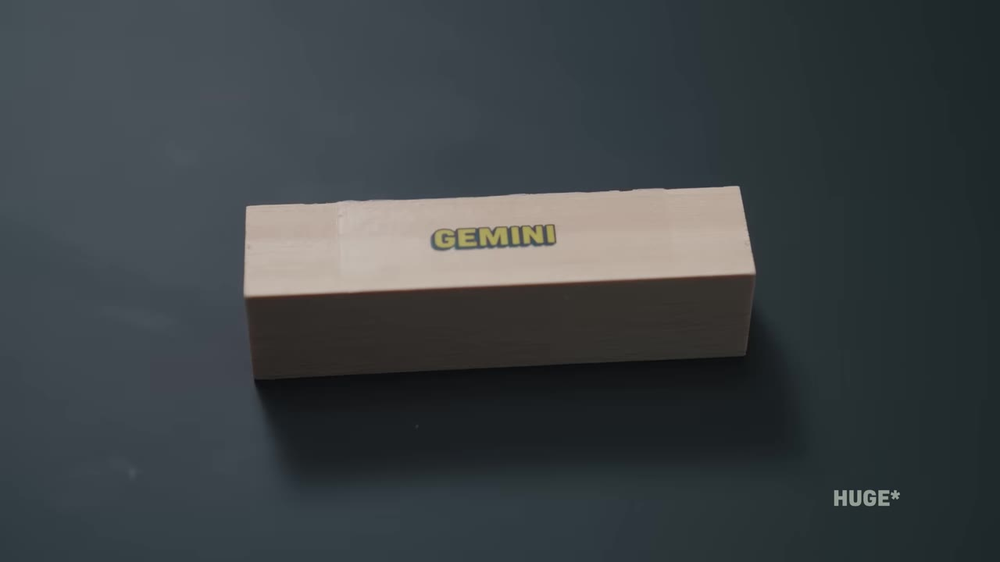
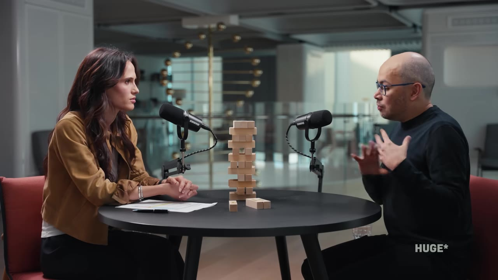
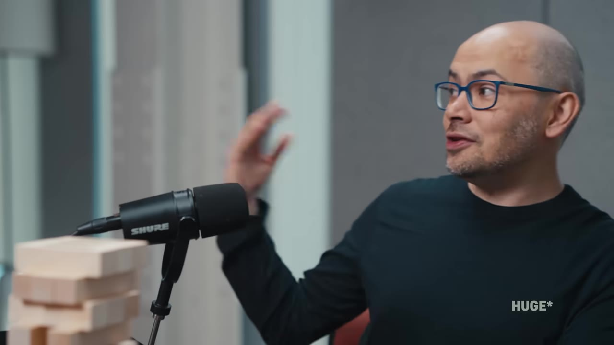
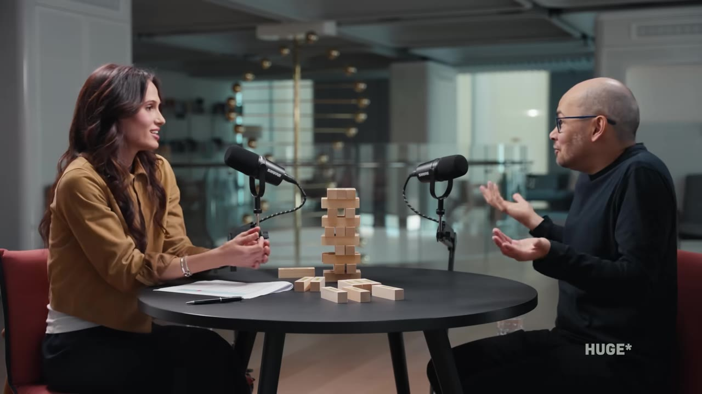
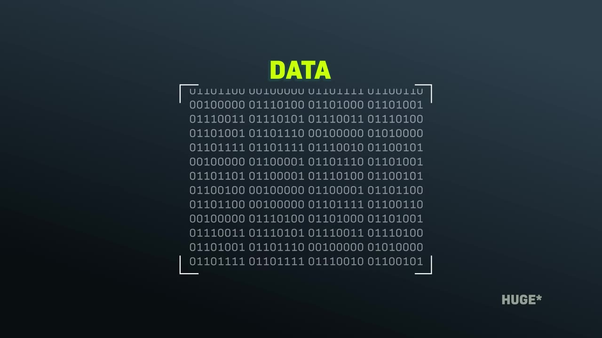
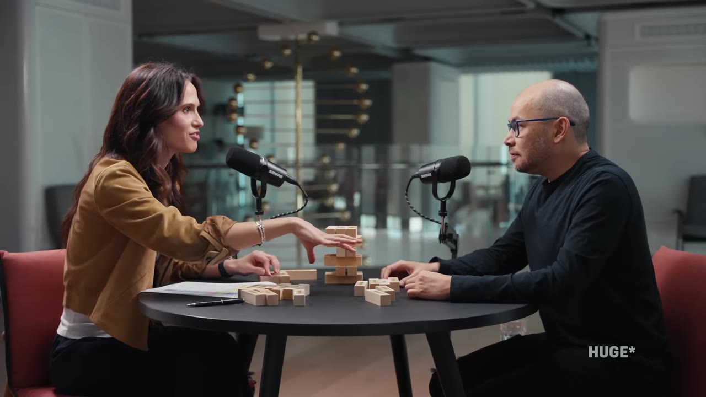
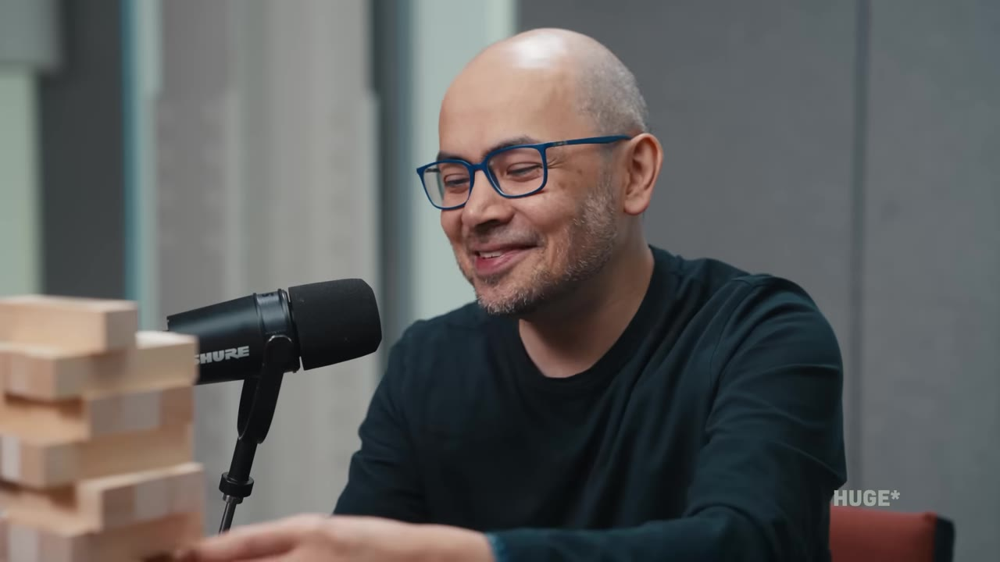

Nobel laureate Demis Hassabis traces the arc of modern AI — from AlphaFold's protein breakthrough and AlphaGo's legendary move 37 to the ChatGPT shock, AI safety, and his 50-year vision for AGI, fusion, and the stars.
Watch on YouTubeSteven Satterfield and Demis Hassabis begin with a stack of Jenga blocks — each one labeled with a DeepMind project. What was meant to be a visual aid becomes an impromptu game that runs throughout the entire conversation.

The setup is deceptively simple: trace the story of how a company founded on beating video games became the engine behind the most transformative scientific tools of the century.
:::
The protein folding problem — predicting a protein's 3D structure from its amino acid sequence — was a 50-year grand challenge described as "Fermat's Last Theorem for biology." Before AlphaFold, determining a single protein's structure required X-ray crystallography: months of effort, hundreds of thousands of dollars.
By 2021, AlphaFold had cracked it. And in a meeting that was fortuitously being filmed, Hassabis had one of those rare "everything changes" moments.

We should just run every protein in existence. Fold everything anyone could ever want, and put it on a database for free.— Demis Hassabis
One team member suggested building a server for scientists to request individual protein predictions. Hassabis did a back-of-the-envelope calculation: 200 million known proteins, one every 10 seconds — it would take about a year. Why build servers when you could just do it all?
:::
The real power of AlphaFold isn't that it solved one problem — it's that it unlocked everything downstream.
For plant scientists studying crops like wheat (which surprisingly has more genomic data than humans), AlphaFold means they can skip years of structural biology and jump straight to engineering climate resilience. For researchers studying neglected tropical diseases — malaria, Chagas, leishmaniasis — it provides protein structures that big pharma won't fund but affect hundreds of millions of people.

DeepMind spun out Isomorphic Labs to build on AlphaFold as an end-to-end drug discovery platform. They're currently running 18-19 drug programs across cardiovascular disease, cancer, and immunology. The average drug takes 10 years to develop with only a 10% success rate — AI-accelerated discovery could fundamentally change those odds.
:::
For years, DeepMind's mission was narrow and noble: solve intelligence, use it to solve everything else. DeepMind was sold to Google specifically so it could focus on scientific research. Then ChatGPT dropped in late 2022 and everything changed.
Hassabis went from leading a research lab to running all of Google's AI — including consumer products. He was honest about the tradeoff.

If I'd had my way, I would have left AI in the lab longer. Done more things like AlphaFold. Maybe cured cancer or something like that.— Demis Hassabis
His ideal path: a CERN-like scientific effort, carefully building AGI with the scientific method, while releasing specialized narrow AI (like AlphaFold) along the way to benefit humanity. Instead, transformers and reinforcement learning "cracked language" faster than anyone expected, and the commercial arms race began.
He does see some bright spots in the chaos: democratized access to frontier AI (everyone is within months of what's in the lab), and stress-testing by millions of users making systems more robust than any internal testing could achieve.
:::
Go to March 10, 2016. The Go board has more possible positions than atoms in the universe. AlphaGo plays move 37 — on the fifth line, early in the game, a move no human would ever make. A Go master would "slap your wrist" for playing there.
It was wrong by every convention. And it won the game.

AlphaGo had learned from human games and then gone beyond them through Monte Carlo tree search. Move 37 wasn't random — it was a genuine insight, 100 moves ahead. It revolutionized how all professional Go players think about the game.
For Hassabis, move 37 was the signal: these systems can do things no other system can. The creative spark that justified years of building deep reinforcement learning. It was time to turn the same approach to science.
Not only did we win the match 4-1... it was how it won and with these creative new ideas like move 37. That for me was the signal that we were ready to turn it to scientific problems like AlphaFold.— Demis Hassabis
:::
AlphaZero was the ultimate generalization: start with nothing but the rules of the game, no human data, no domain knowledge. Just a neural network and self-play.
The evolution was terrifyingly fast. In one live demonstration, Hassabis watched AlphaZero go from random play in the morning to better than all human grandmasters by lunchtime, to world champion by dinner — all in a single day through 17 generations of self-improvement.

These same principles are now being applied beyond games: AlphaTensor found faster matrix multiplication algorithms (the foundation of all neural networks), AlphaCode finds bugs in code, and AlphaChip designs more efficient chip layouts — sometimes outperforming human designers on NP-hard routing problems.
:::
When governments inevitably deploy AI at scale, Hassabis identifies two existential concerns that most public debate misses:
There are two things to worry about. One is bad actors — whether individuals or nation-states — repurposing these technologies we're building for good for harmful ends. And then the second branch: the AI itself going rogue.— Demis Hassabis
The first concern: dual-use technology. Everything designed to cure diseases and advance material science can be weaponized — inadvertently or intentionally.
The second: as agentic systems become capable of completing entire tasks autonomously, how do we ensure they do exactly what we intended? Not what we asked for, but what we meant. This is "an incredibly hard technical challenge" that he feels even experts aren't paying enough attention to.
On deepfakes, he advocates universal AI watermarking (Google's SynthID system) but calls it "small" compared to the AGI safety problem.
:::
The central question of Hassabis's life: what can AI not do that humans can? He sees the brain as an "approximate Turing machine" — computation-based, not quantum. (He's had good-natured debates with Roger Penrose, who believes quantum effects are essential to consciousness.)
So far, neuroscience has found no quantum effects in the brain. Most of what the brain does appears to be classical computation — which means there may not be a hard limit on what AI can eventually replicate.
I don't really have any prescribed notion of what the answer should be. I just want to know the answer.— Demis Hassabis
He's open to the possibility that some uniquely human connections will never be replicable, but believes long-term planning, reasoning, and some forms of creativity will eventually be within AI's reach. The journey of building intelligent artifacts may serve as a "controlled study" comparing the human mind to artificial ones.
:::
Hassabis is a sci-fi fan — his favorite series is Iain M. Banks's Culture series, depicting a post-scarcity future run by benevolent superintelligence. He believes some of that could happen within 50 years.
The chain reaction:
I believe you. You're saying these things and... I like that when you're saying that my belief is [higher].— Demis Hassabis
:::
For the optimists watching who want to be part of the future Hassabis describes, his advice is pragmatic: immerse yourself in every AI tool available and become "super-powered" with those capabilities.

The opportunity space is getting huge for people who are really expert at using these tools and then applying it to some new domain. A kid these days could probably start a multi-billion dollar business using these tools in some new way that no one had thought about.— Demis Hassabis
The final question — what would people say at his funeral?
I would hope that they would say that my life was of benefit and service to humanity. That's what I'm trying to do.— Demis Hassabis
:::